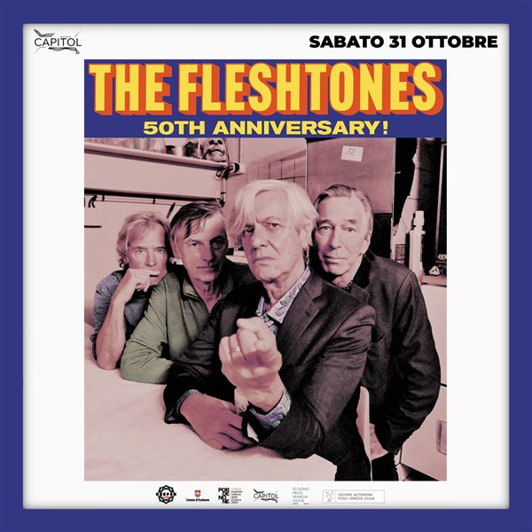

The Fleshtones in Pordenone: The Vindicators open the night
On Saturday 31 October the Capitol in Pordenone hosts The Fleshtones, celebrating fifty years of career with seven dates in Italy. The Vindicators open the night.
- When
- Saturday 31 October 2026
- Times
- Doors 8:30 pm · show 9:15 pm
- Where
- Capitol, Via G. Mazzini 60, Pordenone
- Opening
- The Vindicators
- Tickets
- €20 in advance, €22 at the door; free up to age 10